Terlahir dari rahim Bundo Minangkabau di perantauan, tepatnya di kota Tangerang dengan 3 orang bersaudara
Kemudian besar dengan kasih sayang oleh orang tua hingga kelas 6 SD
Setelah lulus SD, dibesarkan dengan cinta oleh datuk dan enek hingga Tamat SMA di Desa yang damai bernama Kubang di Kab. Lima Puluh Kota, Sumatera Barat
Beranjak Remaja berkuliah di Fakultas Ekonomi, Universitas Negeri Padang dari 2008-2010, merasa karena bukan jiwanya, mulai kuliah lagi di Prodi Desain Komunikasi Visual, Jurusan Seni Rupa, Fakultas Bahasa dan Seni, Universitas Negeri Padang di tahun 2010-2015
2013, bekerja di Harian Haluan Padang yang sangat-sangat membentuk mental kerja tahan banting, kuliah di siang hari bekerja sebagai desain layouter di malam hari
Memutuskan untuk menikah di akhir tahun 2015, kemudian kisah berlanjut di wilayah empunya Kesultanan Hamengkubuwono, D.I Yogyakarta, bekerja sebagai Desainer di CV. Andalas Visindo bergerak di bidang IT di Awal tahun 2016.
Medio 2018 CV Andalas Visindo berubah menjadi PT Inti Core Indonesia, naik pangkat menjadi Designer & SEO Specialist
Qadarullah, ada sesuatu hal yang menyebabkan harus kembali mudik ke Kampung halaman di awal tahun 2022, mencoba menjadi pekebun dadakan di kampung halaman
Mencoba hal baru di dunia pertanian, bertanam buah jeruk dan cabai di tahun 2022-2023
Dan sekarang, mencoba peruntungan di Kota Curup, Bengkulu sebagai teknisi smartphone, Alhamdulillah
portfolio
ilustrasi

Akulah Mercusuar
(2012)
Membuat desain baju untuk diri sendiri sebagai curahan hati seorang pengagum rahasia kepada seseorang dengan ilustrasi sebuah mercusuar yang selalu menerangi jalan kapalnyanya pergi dan pulang
"Akulah Mercusuar"
di tengah laut itu
setia memberi tanda
sendirian menyaksikanmu
datang dan pergi.
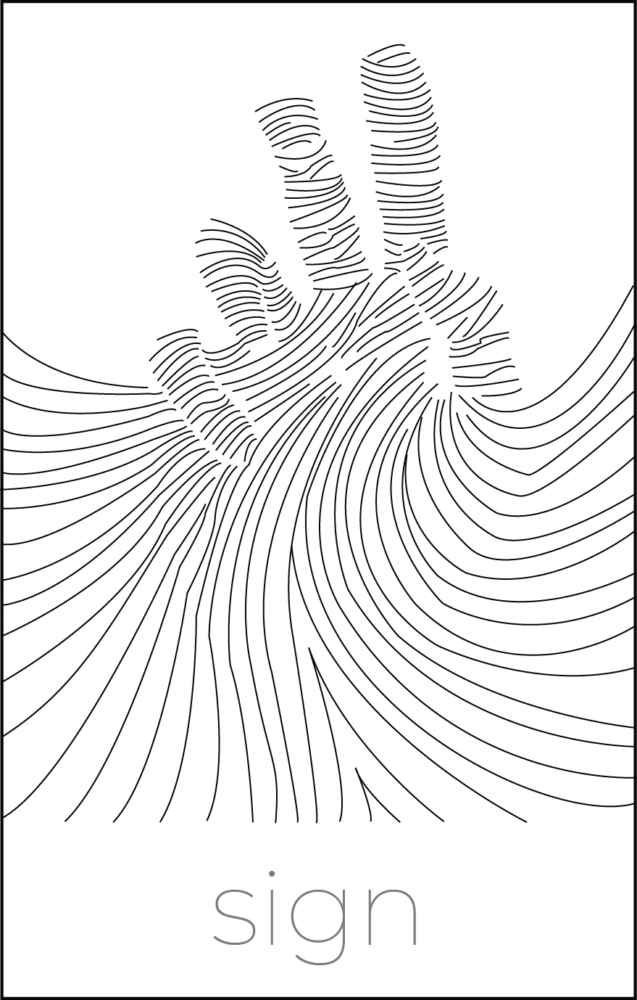
Sign
(2012)
Membuat desain ilustrasi untuk pameran kuliah berjudul "sign" memiliki filosofi sebuah gestur tangan dalam meminta pertolongan, harus kepada siapa meminta pertolongan, gestur meminta pertolongan ke arah atas sebagai tanda bahwa hanya kepada Sang Pencipta lah yang dapat menolongnya.

Gadih Suntiang
(2012)
WPAP (Wedha's Pop Art Portrait), trend desain pada saat itu, Gadih Suntiang, jika diartikan berarti Gadis Bersunting, sunting merupakan perhiasan yang digunakan dikepala pada saat acara pernikahan,
Gadih Basuntiang dengan wajah murung mengangkat kesedihan seorang gadis ketika dijodohkan oleh pihak keluarga, meskipun sudah modern tetapi masih ada beberapa praktik perjodohan di Minangkabau saat itu.

Melo Si Planga Plongo
(komik, 2012)
Tugas komik di bangku perkuliahan, Si Planga Plongo remaja yang sering "dong" ketika disuruh dalam melakukan sesuatu hal oleh orang tuanya.
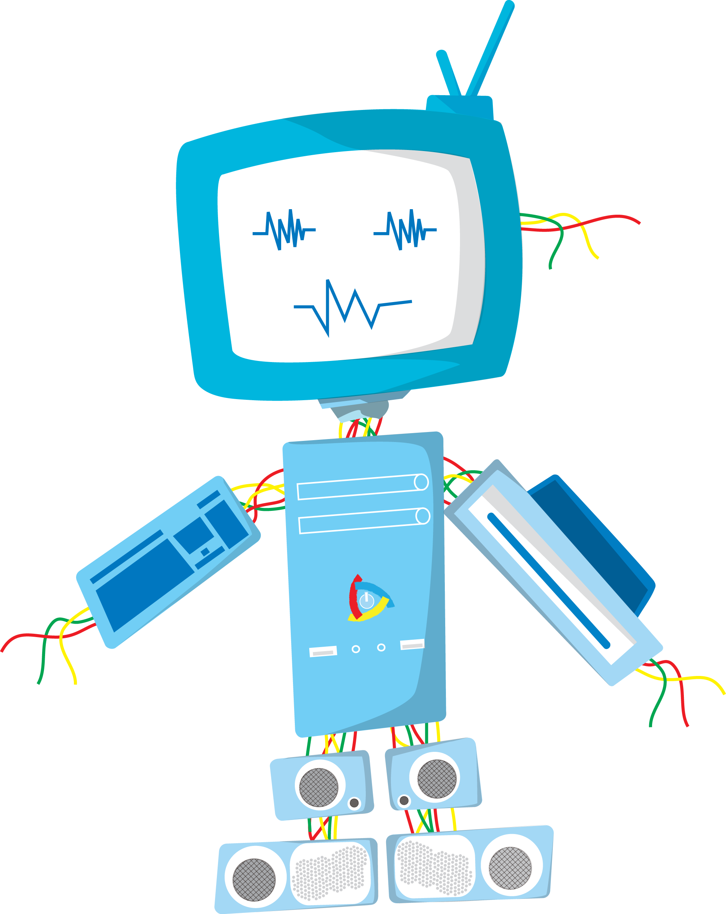
Ikon
(icon pameran unlimited freedom, 2013)
Membuat Icon pameran unlimited freedom, dari program studi Desain Komunikasi Visual, Jurusan Seni Rupa, Universitas Negeri Padang icon dibentuk dari berbagai perangkat komputer.
brand
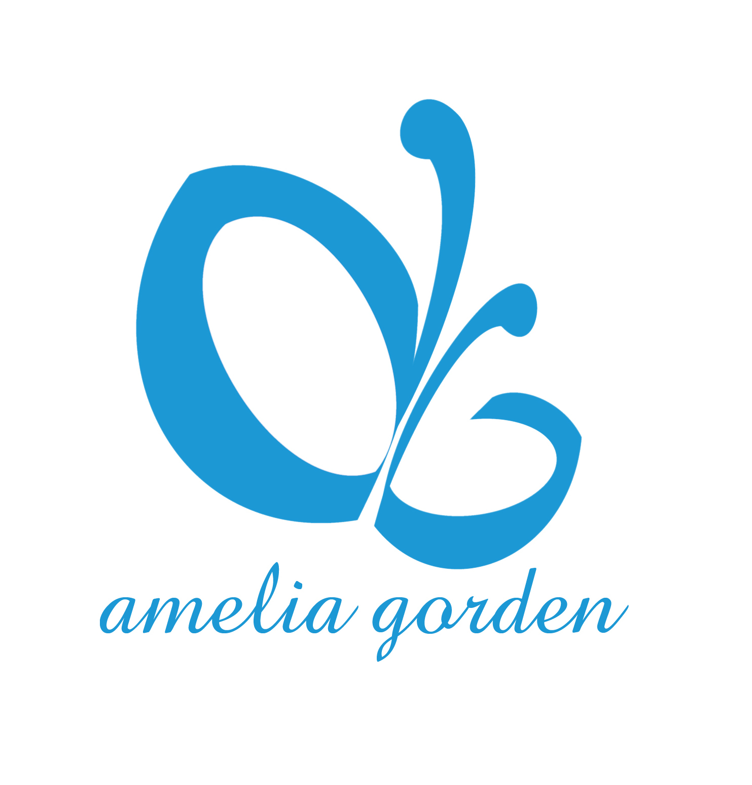
Amelia Gorden
(rebranding logo toko gorden, 2011)
Sebuah toko dengan 3 Cabang di Kota Padang, memiliki sebuah logo yang kurang eye catching, maka dibuatlah sebuah logo yang menggambarkan icon kupu-kupu dengan inisial toko AG "Amelia Gorden" dengan warna biru muda. pemilihan logo berbentuk Kupu-kupu memiliki filosofi mengenai ketika ada kupu-kupu datang ke dalam rumah maka akan ada sebuah keberuntungan yang akan datang, dengan didasari itulah Logo ini berangkat dan penggunaan biru muda menggambarkan ketenangan dan kenyamanan.
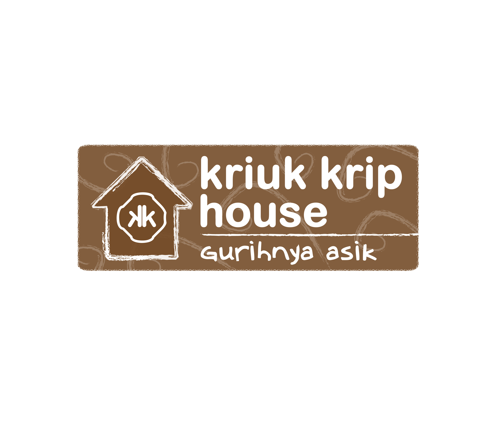
Kriuk Krip
(usaha UMKM Rendang kemasan, 2013)
Kriuk Krip House merupakan seuah usaha rumahan rendang kemasan, belum memiliki logo, maka dibuatlah sebuah logogram dengan visual rumah dan warna coklat tua khas Rendang.
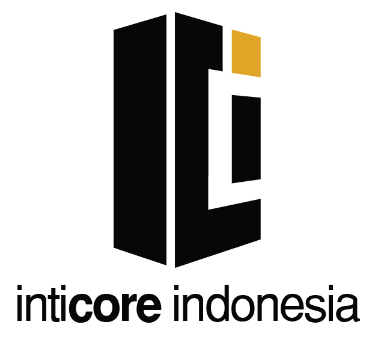
PT. Inti Core Indonesia
(perusahaan start up bidang IT, 2017)
Perusahaan yang bergerak di bidang IT, belum memiliki sebuah logo perusahaan yang mencermikan identitas sebuah perusahaan yang bergerak di bidang IT, dibuatlah logo dengan teknik perspektif logogram dengan inisial huruf perusahaan I C I dengan warna hitam dan orange. Logo menggambarkan visi perusahaan yang jauh menjangkau ke depan dengan visual perspektif, warna hitam melambangkan perusahaan IT yang elegan.
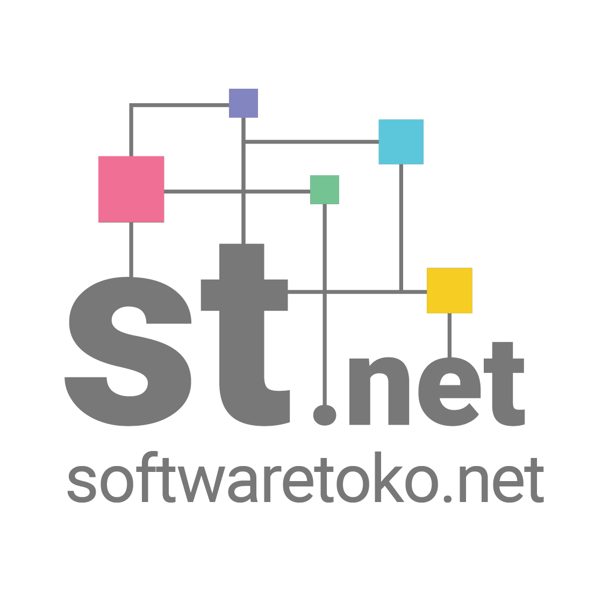
softwaretoko.net
(website penjualan software kasir, 2021)
Website softwaretoko.net merupakan sebuah website yang bergerak di bidang IT, belum memiliki logo. Dibuatlah logo dengan karakter papan sirkuit yang melambangkan kemajuan teknlogi dengan inisial huruf ST. kotak-kotak kecil yang saling terhubung seperti papan sirkuit ini melambangkan koneksi yang erat antar penjual dan pembeli karena kedepannya akan keduanya akan saling membutuhkan baik itu untuk pelayanan purna jual maupun konsultasi pemakaian software.
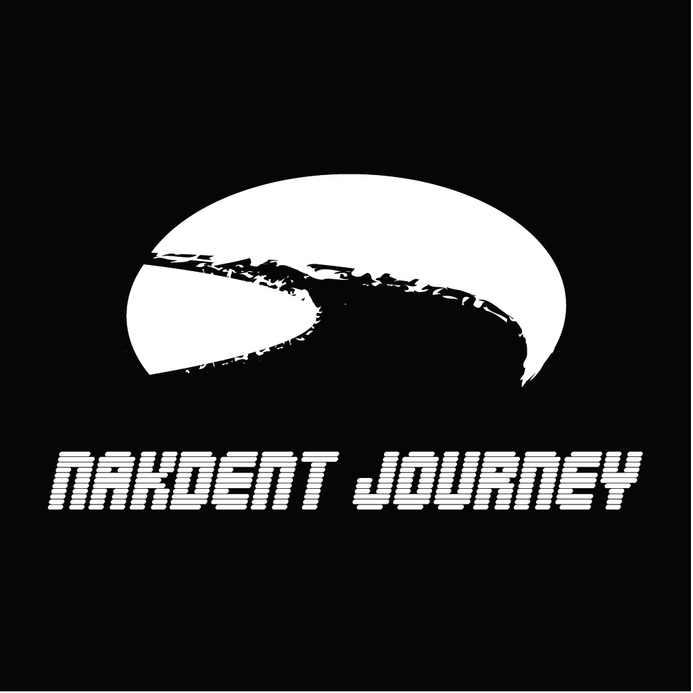
Nakdent Journey
(channel youtube, 2021)
Nakdent Journey merupakan sebuah saluran media sosial youtube yang baru dibuat yang berisikan konten adventure dengan menggunakan sepeda motor (motovlog), dibuatklah sebuah logo dengan ilustrasi perspektif jalan yang melengkung yang melambangkan Nakdent Journey akan terus berpetualang hingga jauh, bentuk oval pepat dalam logo menyerupai siluet matahari yang terbenam melambangkan bahwa setiap perjalanan akan ada akhirnya, menyampaikan pesan bahwa Nakdent Journey akan berpetualang hingga akhir.
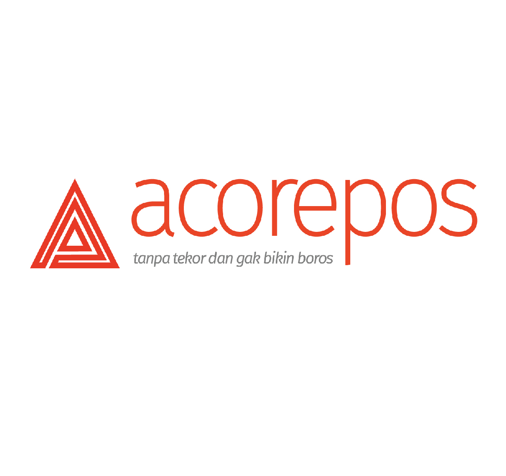
Acorepos
(website penjualan software kasir, 2021)
Website acorepos.com merupakan sebuah website yang bergerak di bidang IT, belum memiliki logo. Dibuatlah logo dengan bentuk segitiga menggambarkan kesan yang stabil, energik dan dinamis, arah atau pergerakan seperti dalam bentuk panah.
perwajahan dan tata letak

Harian Haluan Padang
(perwajahan halaman utama, 2015)
Pimred meminta agar tata letak halaman utama agar dibuat seimbang antara berita headline mengenai penemuan Ganja dan foto utama (Maarak Tabuik) karena merupakan perhelatan besar adat di salah satu Kabupaten di Provinsi Sumatera Barat, maka dibuatlah proporsi tata letak perwajahan dibuat 3/5 untuk foto utama dan 2/5 untuk headline utama, meskipun headline mendapat 2/5 bagian headline akan tetap menjadi sorotan utama pembaca karena ukuran huruf Headline yang besar dan berada pada sisi kanan atas

Harian Haluan Padang
(perwajahan halaman utama, 2015)
Pimred meminta agar infografis lebih ditonjolkan karena dalam masa persiapan Pilkada provinsi Sumatera Barat, maka dibuatlah tata letak infografis memenuhi 2/3 bagian halaman utama dengan judul Headline di bawah infografis

Harian Haluan Padang
(perwajahan halaman pariwara, 2015)
Redaktur meminta tata letak halaman pariwara lebih menonjolkan keberhasilan seorang kepala daerah yang mendapatkan penghargaan di bawah kepemimpinannya, dibuatlah sebuat desain layout dengan font headline yang mencolok ditambah gradasi background berwarna merah yang melambangkan kedinamisan pemerintahan yang telah dipimpinnya.
brosur
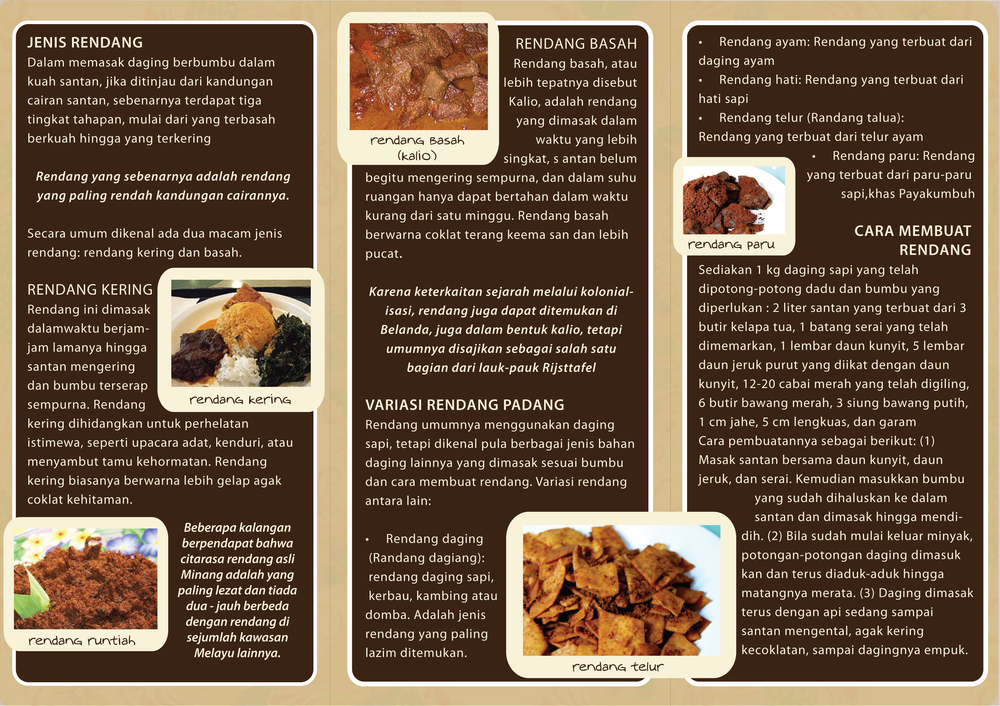
Brosur Kriuk Krip
(brosur usaha UMKM Rendang kemasan, 2013)
Kriuk Krip House merupakan pendatang baru dalam dunia kuliner rendang kemasan, karena masih dalam tahap awal produksi, maka dibuatlah sebuah desain brosur untuk mencapai target konsumen yang mudah dijangkau dengan cara mendesain media brosur yang identik khas warna rendang dilakukan penyebaran brousr dengan teknik door to door.

Brosur software-id.com
(brosur usaha penjualan software, 2017)
Pelanggan belum paham dengan produk terbaru sistem P2P yang ditawarkan oleh suatu aplikasi kasir ketika dalam masa promosi produk, maka dibuatlah sebuah ilustrasi dan keunggulan produk dalam bentuk visual yang memudahkan pelanggan untuk memahami sistem yang ditawarkan berikut tercantum juga media sosial yang bisa dihubungi untuk informasi lebih lanjut.
poster

Tetap Setia
(Juara 1 Lomba Poster BKKBN Sumbar, Padang, 2013)
BKKBN Provinsi Sumatera Barat mengadakan poster lomba dengan tema bahaya bergonta-ganti pasangan, maka dibuatlah sebuah ilustrasi kunci yang memiliki filosofi kesetian, hanya setia pada satu pasangan

Poster Ilmiah
(poster seminar karya akhir, 2015)
Para penguji membutuhkan sebuah informasi dalam pengujian karya seminar akhir oleh seorang mahasiswi dalam sidang tertutup, maka dibutlah sebuah poster untuk mencakup semua informasi yang dibutuhkan oleh Mahasiswi, poster dicetak dengan ukuran A1 (60 cm x 85 cm).

Break Sholat
(poster break sholat toko mr. gadget, 2023)
Toko Mr. Gadget merupakan toko servis smartphone, owner mengeluh karena setiap waktu sholat datang tidak bisa sholat berjamaah di mesjid secara tepat waktu, owner merasa sungkan jika harus membicarakan secara langsung ketika waktu sholat sudah tiba, maka dibuatlah sebuah desain poster agar bisa ditempelkan dalam ruangan tunggu dengan ilustrasi seseoarang yang sedang sholat ditambah dengan informasi penjelasan
UI/UX Website

(2021)
Perusahaan meluncurkan produk aplikasi kasir online untuk pengembangan pasar dan belum memiliki sebuah website ketika persaingan antar software retail sudah berpindah dari offline menjadi online,
maka dibuatlah desain user interface yang menarik dengan menggunakan framework bootstrap agar bisa memudahkan dalam modifikasi website di masa yang akan datang.
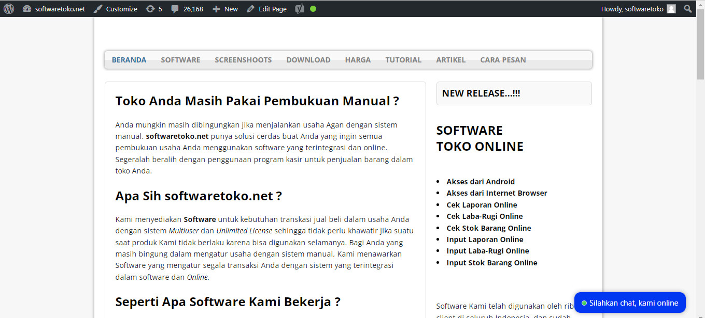
(2021)
Perusahaan ingin membuat sebuah website penjualan aplikasi kasir bagi reseller agar penjualan software menjadi lebih masif dan membuat reseller menjadi lebih profesional dalam mengenalkan produk software yang ditawarkan kepada pelanggan dilengkapi dengan blog yang terus diupdate kontennya, update blog diusahakan agar dibuat lebih mudah bagi reseller dalam pengisian konten, maka dibutlah sebuah website dengan menggunakan CMS seperti wordpress agar pengupdatean konten blog tidak menggunakan kodingan yang rumit.

(2021)
Perusahaan ingin membuat sebuah website penjualan aplikasi kasir bagi reseller agar penjualan software menjadi lebih masif dan membuat reseller menjadi lebih profesional dalam mengenalkan produk software yang ditawarkan kepada pelanggan dilengkapi dengan blog yang terus diupdate kontennya, update blog diusahakan agar dibuat lebih mudah bagi reseller dalam pengisian konten, maka dibutlah sebuah website dengan menggunakan CMS seperti wordpress agar pengupdatean konten blog tidak menggunakan kodingan yang rumit.
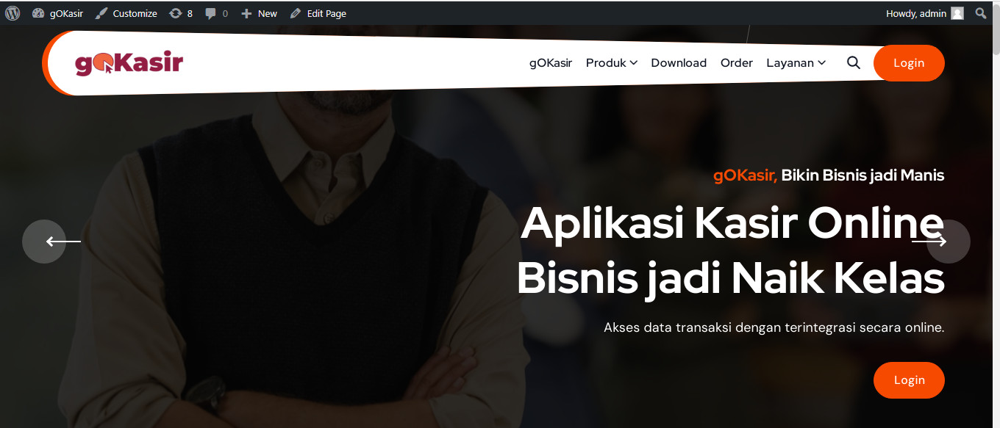
(2023)
Sebuah perusahaan IT ingin membuat sebuah website penjualan aplikasi kasir online untuk menggaet pengguna bisnis online, update blog diusahakan agar dibuat lebih mudah bagi reseller dalam pengisian konten, maka dibutlah sebuah website dengan menggunakan CMS seperti wordpress agar pengupdatean konten blog tidak menggunakan kodingan yang rumit. Website dibuat dengan tampilan yang lebih menarik dan kekinian.
konten motion graphic dan video tutorial
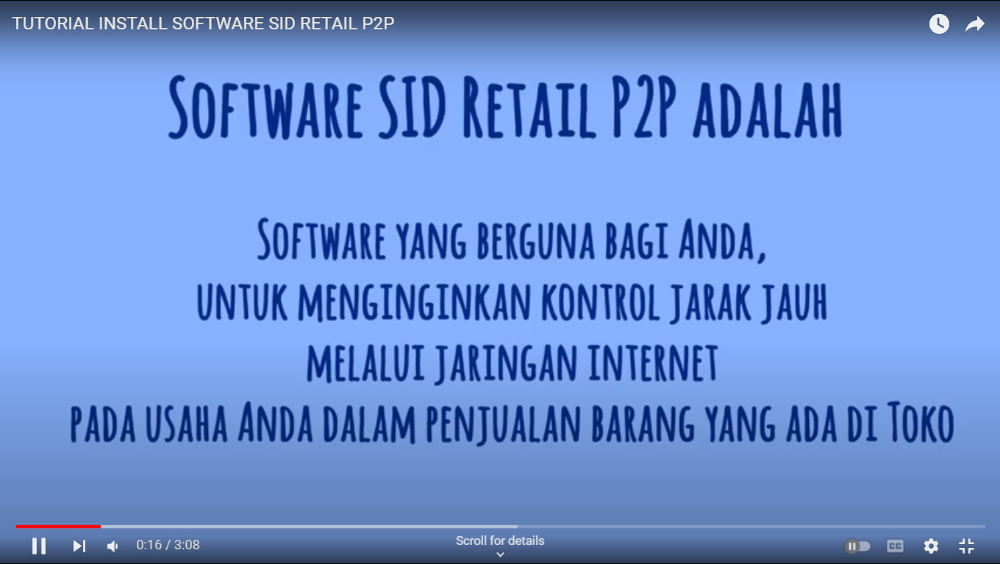
Tutorial Install SID Retail P2P
(membuat video tutorial cara penginstalan software, 2016)
Perusahaan meminta agar dibuatkan tutorial cara penginstallan sebuah produk software baru agar pelanggan mudah memahami cara penginstallan produk baru tersebut, maka dibuatlah sebuah tutorial dengan bentuk konten video yang menarik dengan tambahan motion graphic di awal video dan berikut dijelaskan tata cara install produk software baru tersebut secara berurutan.

(membuat motion graphic ucapan selamat datang bulan Ramadan, 2016)
Dalam rangka memasuki bulan Ramadan, perusahaan meminta untuk dibuatkan sebuah ucapan selamat datang bulan ramadan kepada pelanggan, maka dibuatlah sebuah konten dengan bentuk video berdurasi pendek untuk bisa ditampilkan dalam media sosial, video dibuat dengan motion graphic dengan sound khas timur tengah.

Company Profil PT. Inti Core Indonesia
(membuat motion graphic company profil dari perusahaan start up, 2017)
Perusahaan belum memiliki company profile dalam bentuk video dalam media sosial pada masa awal pembentukan perusahaan, maka dibuatlah video motion graphic dengan konten yang menarik agar menjangkau target audience pengusaha-pengusaha muda dalam berbisnis retail.

(membuat video tutorial cara melakukan penjualan barang secara manual, 2018)
Semakin banyaknya pelanggan yang bertanya cara penjualan barang sebuah software secara manual, meskipun sudah dibuatkan tutorial dalam bentuk teks, perusahaan meminta agar dibuatkan tutorial cara penjualan barang secara manual dipahami oleh pelanggan, maka dibuatlah sebuah tutorial dengan bentuk konten video tata cara penjualan barang secara manual secara berurutan.

(membuat motion graphic promo produk, 2018)
Perusahaan akan meluncurkan sebuah produk baru, perusahaan ingin produk baru ini harus manampilkan pemakaian secara singkat, maka dibuatlah sebuah konten video dengan motion graphic yang menarik dan video dengan beberapa adegan transaksi jual beli dengan menggunkan produk baru tersebut.
konten bergambar

instagram
softwareidcom

instagram
penjualansoftwaredotcom
SEO dan CMS

konten teks untuk optimasi pencarian keyword di laman google (membuat konten teks pada website softwaretoko.net dengan sasaran keyword “aplikasi kasir” dengan menggunakan wordpress)
(2021)
Perusahaan meminta agar pencarian kata "aplikasi kasir" pada laman Google tampil di halaman 1, maka dibuatlah konten dengan teknik SEO (Search Engine Optimization) membuat konten bermutu mengenai aplikasi kasir pada website internal secara berkelanjutan dan terperiode, membuat link yang merujuk pada website utama mengenai aplikasi kasir pada website eksternal, membuat konten dalam bentuk teks, gambar, dan audio visual pada media sosial dengan menggunakan hastag #aplikasikasir.